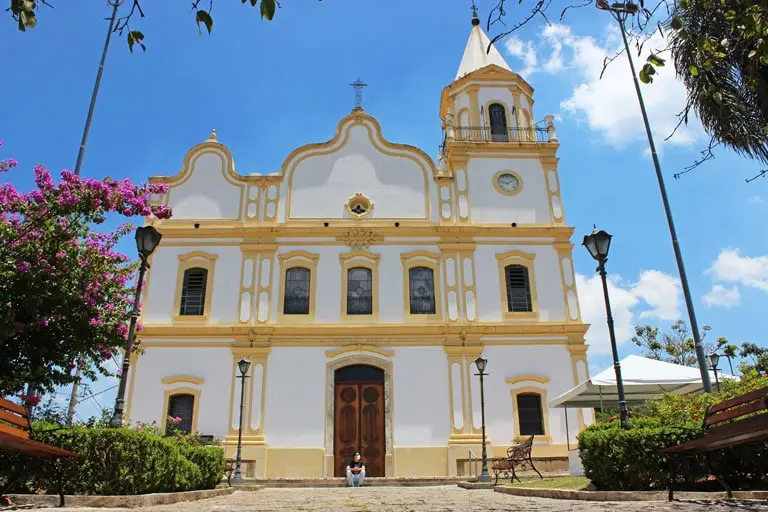

Santana de Parnaíba
Rica em patrimônio e tradições, destaca-se por seu Centro Histórico com mais de 200 edificações coloniais, e por
sua forte tradição cultural com festas populares como o Drama da Paixão e o Corpus Christi
Pontos Turísticos
- Centro Histórico (casarios e ruazinhas coloniais)
- Igreja Matriz de Sant’Ana (século XVII)
- Museu Casa do Anhanguera (patrimônio bandeirista)
- Circuito dos Alambiques (cachaça artesanal)
- Drama da Paixão e tapetes de Corpus Christi (eventos culturais)
